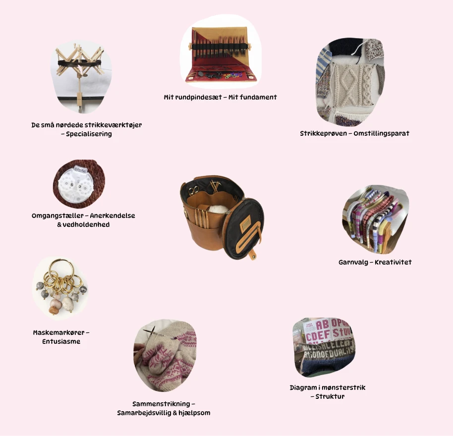

Enhver strikker ved, at de små detaljer kan gøre en kæmpe forskel. Jeg elsker at fordybe mig i et specifikt emne og blive specialist, når noget virkelig interesserer mig.
Ligesom et solidt rundpindesæt er grundlaget for ethvert strikkeprojekt, er mine tekniske færdigheder mit fundament. Jeg arbejder i Visual Studio Code (HTML, CSS, JS), GitHub, Shopify, Photoshop, Illustrator, Figma, Canva og CapCut. Jeg er altid nysgerrig og vil gerne udvide min værktøjskasse med programmer som Premiere Pro.
Man skal igennem mange omgange for at nå et færdigt resultat, og jeg værdsætter både processen og det endelige produkt. Jeg fokuserer på at fremhæve de positive aspekter i arbejdet – både hos mig selv og i samarbejde med andre.
Ligesom masker bindes sammen for at skabe et stærkt helhedsindtryk, tror jeg på vigtigheden af samarbejde. Jeg bidrager aktivt i fællesskaber, deler min viden og hjælper gerne andre med at nå deres mål.
Man ved aldrig, om man er på rette spor fra start, så det er vigtigt at teste, justere og tilpasse undervejs. Jeg er god til at tilpasse mig nye situationer og finde de bedste løsninger, selv når kursen ændrer sig.
Farver, teksturer og materialer skal passe sammen for at skabe det bedste resultat. Jeg elsker at kombinere visuelle og strategiske elementer for at sikre, at hvert projekt får det rette udtryk og taler til målgruppen.
For at opnå et vellykket resultat kræver det en plan og et klart overblik. Jeg arbejder bedst, når jeg kan skabe to-do-lister, systemer og strategier, der sikrer, at projektet forløber effektivt og med et godt slutprodukt.
Ligesom maskemarkører holder styr på et strikkeprojekt, går jeg helhjertet ind i mine opgaver og sikrer, at hvert skridt bidrager til et stærkt resultat.